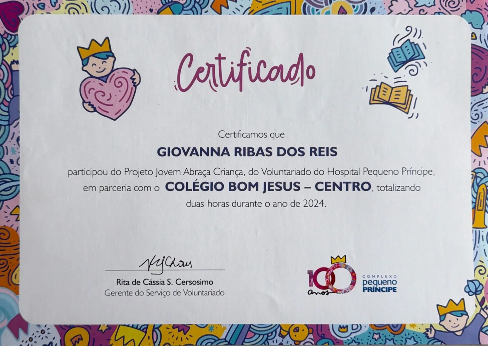
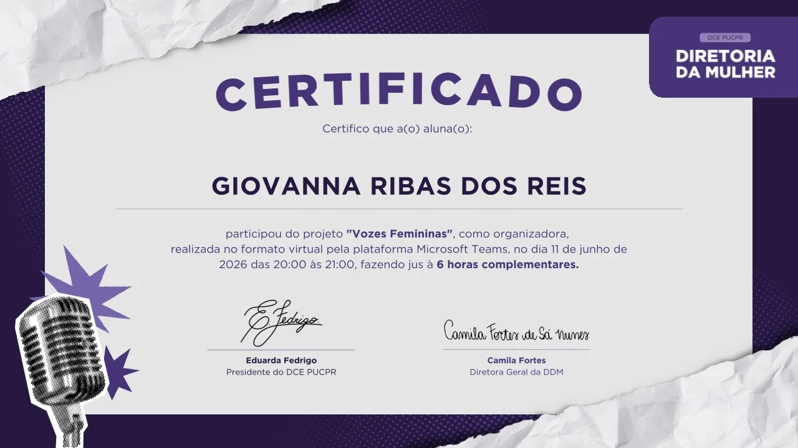
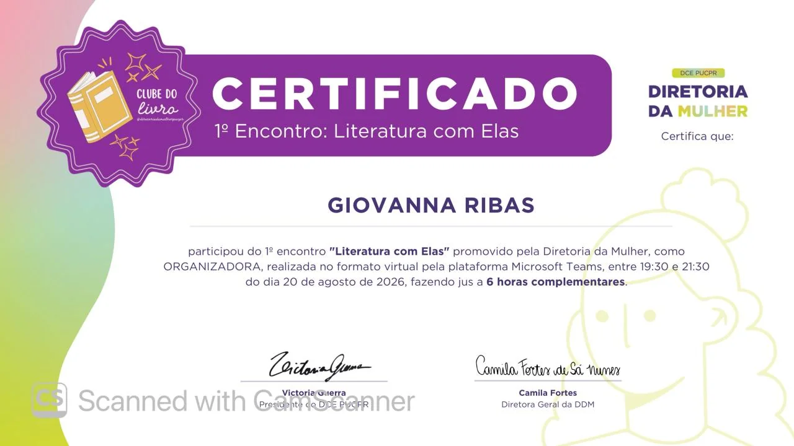

Meiwa — Amigo da Natureza
Highlights:
- Reverse logistics for EPS/styrofoam recycling (Movimento Viramais)
- Circular-economy education
Welcome to my portfolio
Software development, design & creation
Code, design & people — I build where they meet.

DEV · DESIGN LICENSE
Giovanna Ribas dos Reis
Software development, design & creation
Coffee & Code
A university tech club I started and run with a team of friends from college.
I created Coffee & Code out of a want to have, in college, a space to study technology with other people, share doubts and put ideas into practice. I invited friends from the course to build the club with me, and together we’re making that idea happen.
The idea is that each participant can learn at their own pace and fit the club around their own routine.
Beyond presiding over the club, I’m directly involved in building it: I develop the visual identity, prepare the study materials, and work with the team on organising and spreading the word. Writing those materials also makes me go back to the content, look for examples, and think about how to explain what I’m learning.
I want Coffee & Code to be a place where people don’t feel afraid to get it wrong, and find company to try again.
— My trajectory
she builds things — with code, design & people
I’ve had an ease with the digital world since I was little — I liked exploring programs, discovering tools and experimenting with what I could do with them. In 2020, that interest found a direction: I dove into illustration. I consumed references, published my drawings, and thought about working in concept art for games. Drawing took up a big part of my interests and my plans.
Over time, the pressure to improve started changing my relationship with drawing. I pushed myself so hard that I lost the will to do the very thing I loved most. I set my illustration accounts aside and started drawing only every so often, with months between one piece and the next.
Little by little, I found room to create in graphic and digital design, mostly in the presentations I made for school projects. I liked organising ideas and thinking about how to communicate them visually. In 2024, that showed up in FICEM: I proposed researching the science of dreams, co-authored the project, and put together the presentation and the video.
While I was exploring that creative side, another drive stayed with me. I was bothered by the friction I ran into in the software I used, and kept thinking about how it could be fixed. I wanted to be able to work on how things function too — to understand the technical side and build solutions for the problems I ran into as a user.
In 2025 I had my first contact with programming, through Java. The following year, I continued that learning with Python at Escola de Tecnologia Harve and started Software Engineering at PUCPR. The drive to solve the problems I ran into as a user became part of my education. Today, I’m learning to build the solutions that used to stay just an idea, bringing with me the attention to form and communication that I developed through drawing and design.
Academic education
Professional experience
Responsibilities:
Responsibilities:
Source code and internal materials from both aren’t publicly available, for confidentiality reasons.
Outside the IDE
My collection of creations — everything I make away from a code editor: digital art, ink drawing, graphic design, photography and things I bake. Drag the strip or use the arrows to look through it. Open a piece for the larger image and its context.
Community & social impact
Building with people — each of these is a different role, in a different place.
Highlights:

Highlights:

Highlights:

Highlights:

Highlights:


Highlights:

Highlights:

Project giving space to women’s voices on campus.

First edition of this gathering on women’s literature and participation.

1st Student Relationship Gathering — team integration and strategic topics such as leadership, student protagonism and spirituality, through institutional presentations and guided activities.

With Fabiane Pieruccini (Desembargadora, TJ/PR), Maryah Salgado and Marina Jonsson (lawyers) — hosted by the Advocacia Iniciante, Estudos sobre Violência de Gênero, Advocacia Criminal and Mulheres Advogadas committees.

Experienced the maker culture firsthand — collaboration, trial-and-error, building in community — and helped Prof. Fábio Garcez Bettio at his maker-space exhibit.
Photos are chosen with care — no children’s faces in sensitive contexts, no legible badges or personal data.
Contact
Open to build things with good people.